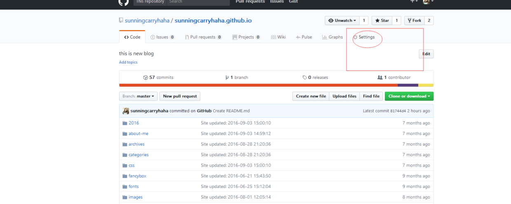
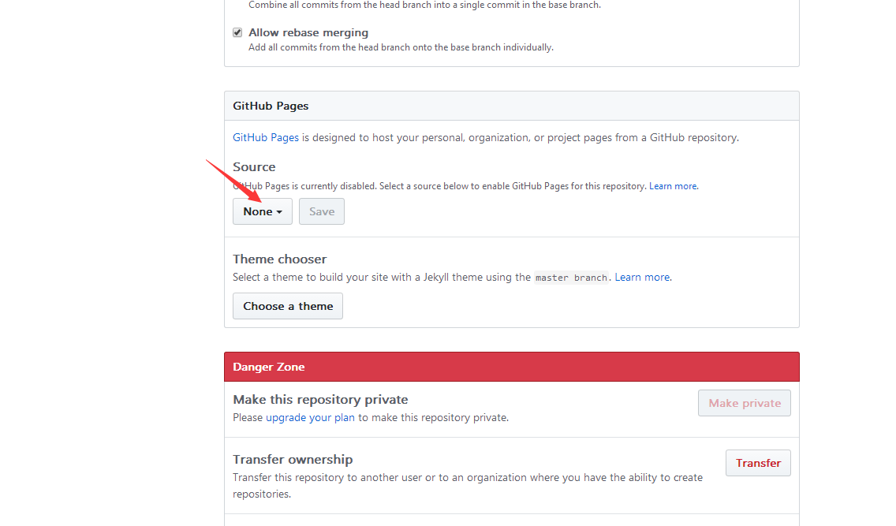
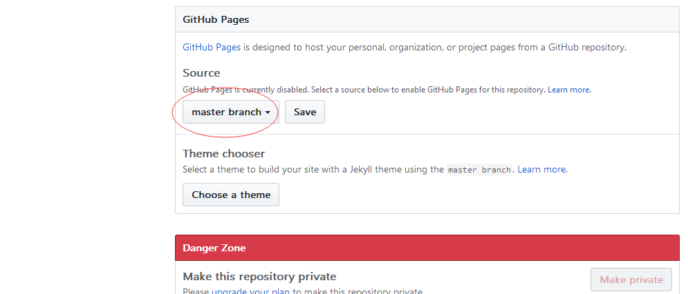
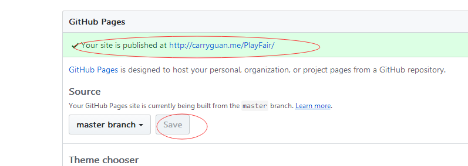

按照如下四个步骤上传到名为:flexSupplement的仓库中
git init (初始化本地仓库)
git add . （将本地所有文件加到仓库里）
git commit -m "message" （设置提交信息）
git remote add origin git@github.com:sunningcarryhaha/flexSupplement.git（本地仓库链接远程仓库）
git push -u origin master （push文件到仓库中）
1、第一步：找到Settings，点击
2、找到githubPages点击none,切换到你要显示的分支，save保存
 3、保存后出现了连接，点击(链接可能要反应几秒钟的时间)
